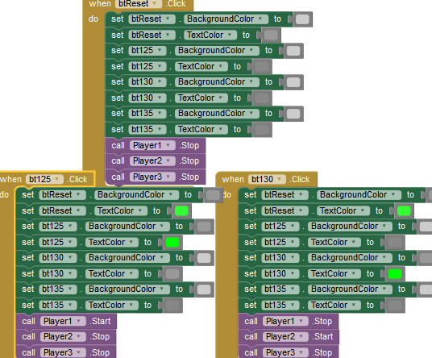

Radio 3 ckts distintos. Um atua com caracteres, outro imagem e outro cor.
Toggle Várias formas de fazer um botão liga desliga.
Note que pode haver contador binário.
c é contador, ou estado, bit; e alterna entre 0 e 1. Conforme cada estado faz tal ação (set)
CKT3:
btEstado var inicia com zero. Estando em zero fara o que estiver na linha abaixo, ou seja, acertar (definir) uma ou mais coisas. A primeira acertar a cor de fundo. A segunda, acertar a propria var pra um.
Com a var em 1, nova cor eh definida e a propria var eh re-acertada pra um novamente.
Toggle também pode ser feito com Slider. Vide Slider.
Toggle FullScreen
Clear Components: Text box.
Long Click
https://youtu.be/yiTygRVDndA
Botão A + B1 ou B2
Components: basicamente três ou quatro botões.
bt125: ao clicar toca uma música; sendo que ao fazê-lo bt125 e btReset se acendem.
bt130: se clicarmos a primeira música para e uma nova começa.
btReset: é um STOP; se clicar a músicas param.

Botão com cloxk - pisca-pisca Um botão mágico!
https://www.youtube.com/watch?v=n6sWkSwBhFg
StartGame: quando clicamos ele se torna invisível e torna outro botão visível, o StarNewGame. Além disso, ele desliga o Clock.
StartNewGame inicia invisível, e aparece quando clicamos em StartGame (que está piscando).
TimerInterval define tempo do relógio, o piscar mais rápido ou lento.
Botão com clock - texto mudando ("piscando")
Botão com clock - rec
TimerInterval define tempo do relógio, o piscar mais rápido ou lento.
https://www.youtube.com/watch?v=n6sWkSwBhFg
Ckt by joe devido pequenas adaptações, como o uso da logica and. d
https://sites.google.com/site/stevozip/home/AI2/checkboxes
Afetando Números 2 ckt identicos. A diferença é o MinValue/MaxValue onde no primeiro está configurado via initialize.
Text com o Slider1.ThumbPosition faz aparecer no Label1 o atual conteúdo (MinValue/MaxValue) do Slider. Pode-se usar o round (math) entre eles para arredondar os números.
Controlando Volume MinValue/MaxValue pré-configurado 0 /100. Note que está sendo afetado a propriedade Volume do Player1.
Controlando tamanho de um ponto https://youtu.be/_VdEiOOK81U
Toggle Button OnOff.
CKT2 (by Joe). MinValue/MaxValue= 1bit. Joedica: Usei round antes de Slider1.ThumbPosition e funciona.
Toggle de Cor
CKT 1: ideia de "se menor que x cor tal, se maior que x outra cor".
https://youtu.be/60CjYdP_FFU
CKT2 (3 posições; by Joe)
MinValue/
MaxValue: 1/3. round: se menor que 0.49 arredonda pra 0, se maior pra 1. Note que a p¬¥ropria animação do fader será setada. Outra ideia que tive é cria uma var e setá-la com o round e ThumbPosition, assim o fader terá uma animação de mover-se mas sem ser setado, embora internamente estará contando em número inteiro.
CKT3 (3 posições; by Joe). Semelhante ao segundo. Sem a lógica and e usando só menor/maior ocorreu de não fazer todas as transições corretamente.
Radio 3 Posições
MinValue/
MaxValue: 1/3.
round: se menor que 0.49 arredonda pra 0, se maior pra 1.
Não sei se já vi o round usado com ThumbPosition.
Timer com slider
https://youtu.be/3bzq_eKeTIY
Radio buttons
https://youtu.be/wfTXwfRzp5w
Button Exemple
https://youtu.be/1fgsTPF0gFs
text
Canvas.DrawText - Escreve texto na canvas.
Chamar outras telas Estas equivalentes a "telas de jogo" ou "links de menu".
Antes, clique no botão "AddScreen" e adicione "Tela1" e repita criando "Tela2".
Várias Telas
https://youtu.be/O0vk9afKwSc
https://youtu.be/DATaffQX97I
Passagem de valores entre Telas
https://youtu.be/cIBJRi1bbcY